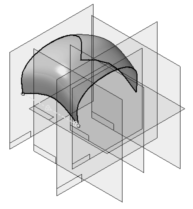
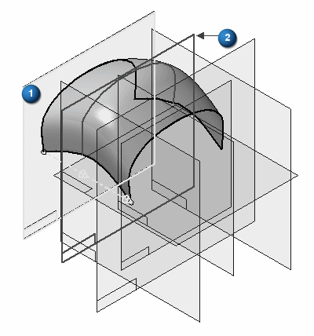
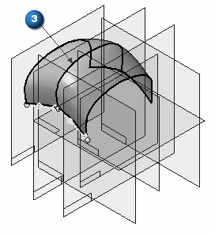
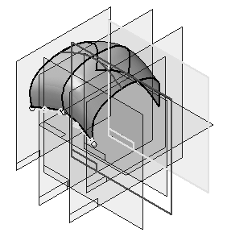
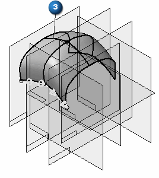
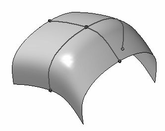

Insert sketches into a BlueSurf
In the following example, the Use BlueDots option is selected in the BlueSurf Options dialog box for curve connectivity.
Inserting a sketch.
-
On the BlueSurf command bar, click the Insert Sketch Step. You must select a plane to insert a sketch on. All of the plane creation methods are available.

In the following example, the parallel plane option was selected. Reference plane (1) was selected as the plane to be parallel to. Reference plane (2) can be dynamically dragged to the location to insert a sketch. You can also key in a distance. Click location to insert a sketch (3).


-
Insert a sketch (3) in the guide curve direction and notice the results. The parallel plane is used again.


-
Now turn off the reference planes and observe the results.

When the guide curve direction sketch was inserted, it crossed another sketch. The BlueSurf command automatically inserts BlueDots at the intersection of the curves. If there were several sketches in the cross-section direction, the inserted sketch in the guide curve direction would be connected with BlueDots.
How do I
Adding cross sections into a BlueSurf (ordered modeling)Construct a BlueSurf feature
Connect sketch elements with a BlueDot
Learn more
BlueSurf overviewEnd Conditions
Cross sections
Look up more details
BlueSurf commandBlueSurf command bar
BlueSurf Options dialog box
BlueDot command (ordered modeling)
BlueDot Edit command bar (ordered modeling)
Hide All BlueDots command (ordered modeling environment)